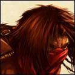

Les Terres de Kirin Tor
Cevi
Points : 4

Joué par :
[ Information masquée ]
Age : 19 ans
Lieu de naisance : Stormwind
Signe de naissance : Faucon
Sexe : Homme
Race : Humain
Faction : Alliance
Formation : Voleur
Niveau : 60
Guilde : L'Ordre de la Nouvelle Aube
Artisanat 1 : Dépeceur
Artisanat 2 : Mineur
Envoyer un MP
Informations hrp : Fils d'une catin comme on en voit tant, Cevi est né dans un bordel de la vieille ville dans Stormwind. Elevé par les catins aprés la mort de sa mère, il a décidé de racheter le bordel pour offrir une autre vie à ses "mères" mais alors qu'il partait à l'aventure son chemin s'est lentement détourné.
Description : Le jeune homme doit avoir prés de 18 ans, les yeux verts, les cheveux chatains clairs en bataille, il est imberbe, le visage assez fin, pas réellement désagréable à regarder, un sourire assez troublant comme si il semble en permanence se moquer de quelque chose ou de quelqu'un. Il porte une belle écharpe de soie noire autour du cou et c'est visiblement le seul vêtement onéreux qu'il porte. Il est vêtu d'une armure de cuir et une épée pend à son coté mais elle ne semble pas avoir beaucoup servit.
A peine entré il se dirige vers le tavernier, commande une bière et vient s'asseoir à une table, la votre :
Bien le bonsoir! Je me permet de m'asseoir ici car je cherche un peu de compagnie à vrai dire. Bien vous voulez quelque chose à boire? Je vais parler pendant quelques temps, autant vous mettre à l'aise. Voila, je me présente je me nomme Cevi et si je viens ici c'est parce que je cherche des gens qui pourrait m'aider, enfin d'abord m'écouter et ensuite m'aider. Rassurez vous je ne viens pas vous parler de trésors ancestraux ou de terres ayant appartenu à ma famille et que je dois récupérer.. Quoi que c'est presque ça en fait.
Le sourire du jeune homme s'élargit avant d'être dissimulé par la choppe qu'il porte à ses lèvres.
Bien voila mon histoire...
Je suis né il y à 18 ans, lors de la décade du faucon de l'année 610 dans un bordel des bas quartiers de Stormwind ; ma mère était une catin qui n'a pas su faire attention alors qu'elle faisait son travail.. Ou peut-être n'a t-elle pas voulu le faire. Toujours est il que je ne vais pas me plaindre, je ne serais pas là sinon. Bien évidemment elle eu quelques problèmes mais elle réussit à s'en sortir ... En partie en me confiant à ses amies, catins elles aussi, lorsqu'elle recevait des clients. Ainsi j'eus une bonne dizaine de mères.
Mais durant l'année de mes six ans ma mère mourut, battue à mort par un ivrogne, qui heureusement pour lui avez assez d'argent pour que l'on ferme les yeux. On me dissimula les causes de sa mort, ma mère était morte voila tout. Pour être franc cela ne modifia pas vraiment ma vie, j'avais toujours une douzaine de mères, certaines aimantes, d'autres sévères et aigris, d'autres encore qui me couvaient à l'excès. Ce sont elles qui s'occupèrent de m'éduquer, et on peut s'attendre à une éducation assez sommaire lorsque la salle d'étude est un bordel. Non pas qu'elles me donnèrent une éducation pour me faire travailler dans le bordel loin de là. Pour rien au monde elles ne désiraient me voir vivre dans un tel endroit.
Jusqu'à mes dix ans j'appris quelques trucs, la cuisine, le calcul parce qu'il ne faut pas se faire avoir avec la monnaie, le vol et la filature pour quand les clients essayent de ne pas payer ou de mal payer. Toutes ces choses indispensables à un jeune garçon dans la rue ou un bordel. C'est à cet age que l'on estima juste de me révéler comment ma mère était morte. Bien entendu je jurais farouchement de la venger, et bien entendu on ne me pris pas au sérieux. Que pouvait faire un garçonnet de dix ans contre un adulte qui n'hésiterait pas à le battre à mort? Bizzarement elles arrivèrent à me faire comprendre que d'essayer de tuer cet homme de mes mains était un suicide. Mais comme quoi les enfants peuvent être retords, j'eus une idée lumineuse.
Cet ivrogne continuait à venir dans ce bordel malgré son meurtre. Il était persuadé que l'argent lui permettait tout surtout avec ceux qui n'en n'avaient pas, ou peu. Je profitais donc d'une de ses visites où il était encore ivre pour subtiliser sa bourse et remplacer son précieux or par les maigres piécettes de cuivre que j'avais pu "trouver" par ci par là. Il ne s'en aperçut qu'au moment de payer. Bien entendu il se mis à crier au vol et au bout de quelques minutes de recherche plus ou moins active on retrouva les pièces dans mes poches. On réussit à l'empêcher de me mettre en prison, en lui offrant la nuit bien sur. Quand à moi je fus sévèrement puni, mais plus que toutes les punitions qu'on ai pu m'infliger, l'idée que mon plan que je trouvais si formidable pour venger ma mère soit d'une bêtise et d'une stupidité sans borne, était pour moi une cuisante blessure.
Durant encore quelques années je restais dans ce bordel. Je sortais de temps en temps pour échapper à mes mères et vivais de petits larcins qui se terminaient le plus souvent en course effrénée dans les quartiers de Stormwind. Au fil des années je réussis à affûter mes réflexes et mon agilité. Je devint un petit voleur sans prétention. Puis arrivé à mes 14 ans je pris une décision qui bouleversa ma vie si l'on puis dire, toujours est-il que c'est cette décision qui me fait avancer désormais ; je voulais racheter le bordel où j'étais né et ainsi permettre à toutes ces femmes qui m'avaient élevé de vivre normalement. En faire une auberge que je léguerais à mes mères qui sait? Toujours est-il que je pris cette décision et bien conscient qu'il me faudrait une somme considérable pour y arriver je quittais Stormwind pour aller sur les routes dans l'espoir d'utiliser mes maigres talents de cambrioleur pour amasser assez d'argent. Je me rend compte que même quatre ans après mon fabuleux plan je n'avais pas beaucoup mûri finalement.
Le jeune homme interrompt son récit pour s'humidifier un peu la gorge avant de reprendre.
Durant quelques mois je parcourais les routes, allant de villages en villes. Je faillis être pendu à plusieurs reprises et finalement au bout de cinq mois j'avais gagné à peine de quoi vivre et récolter une belle cicatrice sur tout le cou, qui provenait d'une corde un peu trop serrée et qui avait bien failli me coûter la vie si je n'avais pas réussi à la couper et m'enfuir.
Néanmoins durant ces cinq mois il eu un évènement qui me laisse un goût amer. Alors que je visitais une ville, je m'arrêtais dans une auberge pour me reposer et me rincer le gosier, et quelle ne fut pas ma surprise de retomber sur l'homme qui avait tué ma mère! Aprés avoir murmurer un remerciement au dieu qui avait accomplit ce miracle je me pris une choppe et alla m'asseoir à une table. J'écoutais attentivement et finalement ce fut un riche marchand qui me fournit le plan en or. Il discutait avec un autre homme, manifestement un ami, et lui racontait qu'il avait avec lui une bourse rempli de pierres précieuses qu'il destinait à une vente prochaine dans cette ville. Toujours attentif, je laissais l'assassin s'enivrer comme à son habitude, et me focalisais sur mon marchand. Manifestement il dormait dans l'auberge. Je le laissais donc monter et peu après je le suivais et entrais dans la chambre voisine à la sienne. Je pris mon mal en patience et attendis qu'il dorme ; une fois endormis je me glissais discrètement dans la salle commune jusqu'à l'aubergiste et profitais de son inattention tandis qu'il nettoyait les dégâts causé par les ivrogne, pour subtiliser le double de la clé de la chambre du marchand. Une fois celle ci en ma possession, je remontais silencieusement et pénétrais dans sa chambre. Je mis quelque minutes qui me parurent une éternité pour trouver cette bourse ; finalement une fois celle ci dans ma poche, je m'éclipsais et attendis que mon ivrogne monte se coucher à son tour. Cela prit beaucoup moins de temps et au bout d'une heure j'entendis sa démarche comparable à celle d'un tauren monter les escaliers. Il était tellement ivre qu'il entra dans sa chambre sans même prendre la peine de fermer derrière lui et s'effondra comme une masse. Je patientais quelques minutes puis je rentrais dans sa chambre et cachais la bourse dans ses affaires et la clé dans sa poche. Puis je retournais dans ma chambre et essayais de dormir, mais j'étais trop excité. Je finis par sombrer dans un sommeil de plomb.
Je fus réveillé le lendemain par les hurlements du marchand qui criait au vol. Ce marchand semblait influant puisque quelques instants plus tard la garde cernait l'auberge et commençait à fouiller les chambres, des fois que le voleur serait toujours ici. Il ne trouvèrent rien dans ma chambre à part ma dague et ma maigre bourse. Puis ils arrivèrent à la chambre de l'ivrogne ; le pauvre il n'avait pas décuvé mais les bruits des chaînes autour de ses poignets et de ses jambes le dégrisèrent rapidement. Il fut emmené en prison et quelques jours plus tard on pris la décision de le pendre. Quelle joie pour moi! Du moins c'est ce que je croyais. Je me fis un plaisir d'assister à sa pendaison, alors qu'il pleurait encore et se jurait innocent. Finalement la sentence fut rendu et il fut pendu. Bizarrement j'eus l'impression que son regard se posait sur moi alors qu'il rendait son dernier souffle et je crus y distinguer une lueur de compréhension, comme si il m'avait reconnu. Malheureusement, cette vengeance ne m'apporta pas vraiment la satisfaction que j'espérais. Je m'enfuis assez rapidement de cette ville et durant des semaines mes rêves furent hantés par cet homme et son regard. Aujourd'hui encore il arrive que je me réveille en hurlant à cause de ces cauchemars. Et la seule solution que j'ai pu trouver pour l'instant, c'est l'alcool. Lorsque les cauchemars deviennent insupportable, je m'enivre jusqu'à sombrer dans un sommeil sans rêves.
Le jeune homme essaye en vain de dissimuler un tremblement qui allait croissant durant son récit, finalement il boit une longue gorgée de bière et son regard montre durant quelque instants ses tourments, puis il se reprend rapidement et poursuit son histoire.
Conscient que je n'étais pas assez bon pour le cambriolage pour l'instant je changeais de voie et m'orientais vers le théâtre. Je rejoignis une troupe d'acteur et durant deux ans je jouais divers rôles jusqu'à ce que la troupe se sépare. Là encore mes talents d'acteur étaient plus que moyen et je ressortais avec une bourse bien maigre. Ne voyant plus vraiment d'autre solution, je me décidais à rejoindre une bande de bandits de grand chemin. J'investissais mes dernières pièces dans une armure de cuir et une épée courte et partais à leur recherche. J'avais entendu parler justement d'une bande qui écumait la région et je ne mis pas beaucoup de temps à les trouver. Aprés avoir déployé des trésors de persuasion pour leur faire comprendre que je n'étais pas un espion ni une victime potentiel, ils m'acceptèrent parmi eux, jugeant qu'un homme de plus ne ferait pas de mal, même aussi jeune et inexpérimenté. Je restais avec eux durant prés de deux ans. Durant ces années ils m'apprirent à me battre, mais je ne me débrouille pas très bien à vrai dire, à voler et parfois tuer même si j'ai eu beaucoup de mal. Je restais néanmoins avec eux, même si je finis par comprendre que ce n'étais pas fait pour moi ; mais je craignais qu'ils n'essayent de me tuer si je fuyais. Finalement les mort-vivants arrivèrent et la majorité de notre bande fut décimée. Je réussi à m'enfuir avec quelques uns d'entre eux et je réussis à les persuader que nous aurions plus de chance de survivre en nous séparant. Je m'enfuis à toute jambes et courus me réfugier à Stormwind. J'y suis resté durant un an et demi.
Je suis retourné au bordel pour donner le peu d'argent que j'avais amassé, en remboursement de toutes ces années où elles se sont occupées de moi. Durant ces un an et demi, j'ai travaillé dans les différentes taverne du coin comme acteur, mon succès fut à peine meilleur qu'auparavant mais cela me permis de survivre jusqu'à aujourd'hui.
Maintenant je suis décidé à repartir sur les routes toujours dans l'idée d'amasser assez d'argent pour racheter ce bordel. Mais j'ai compris que je n'y arriverai pas seul et je suis donc parti à la recherche de compagnon qui pourrait m'aider dans ma tache.
Le jeune homme achève son récit en même temps que sa bière et vous scrute avant de reprendre :
Voila vous savez à peu prés à quoi se résume ma vie, il reste encore des zones d'ombres et les connaître ne vous servirait à rien.De plus je ne vais pas tout dire à des gens que je viens à peine de rencontrer, manifestement l'alcool m'a déjà fait trop parler. Comme je vous l'ai dis, je viens demander de l'aide pour quelque chose de bien maigre, mais c'est important pour moi, et pour avoir vécu dans ce bordel durant toute mon enfance, je peux vous garantir que je ne souhaite ça à personne. Libre à vous de m'aider ou de vous moquer de moi mais si vous ne voulez pas m'aider je trouverai quelqu'un d'autre. Bonne soirée et à bientôt.
Le jeune homme se lève et semble tanguer un peu, manifestement ce n'était pas sa première bière de la soirée et vous pensez que ce ne sera pas la dernière. Il arrive néanmoins jusqu'à la porte et jette un dernier regard sur la salle avant de sortir, la porte se fermant silencieusement.
Ère du Renouveau [6]
Lune de la Force [5]
Décade du Panda [5]
Cauchemars
Non!Voyage
Je me réveillai brusquement étouffant à peine mon cri, alors que ces cauchemars venaient me hanter à nouveau.Ca faisait plusieurs fois cette semaine, trop souvent à mon goût. Je me levai donc et me dirigeai vers une bassine d'eau pour me rafraîchir un peu et restai quelques instants à me laver le visage puis je jetai un oeil à la fenêtre, il faisait encore nuit.
-Bien, je n'ai pas trop le choix manifestement, soupirai-je tandis que je descendais vers la cuisine pour prendre une cruche d'alcool quelconque et une miche de pain avec du fromage. Je remontai ensuite tranquillement jusqu'à ma chambre, une fois arrivé sur mon lit j'entamai le pain avec mon fromage et faisait passer le tout avec l'alcool, du vin, pas mauvais qui plus est, au bout d'une demi-heure j'avais terminé mon repas comme ma cruche et me sentais déjà plus léger, Je me laissai tomber sur mon lit et fermai les yeux. Le sommeil vint rapidement et je sombrais dans un épais brouillard sans rêve.
Me revoilà dans ce maudit village, là où il fut pendu, il a bien changé on dirait, je reconnais les maisons et autres échoppes mais elles semblent toutes éteintes, il n'y a personne dans les rues. Je n'y porte pas trop attention et je me retrouve vers le cimetière, là où sont enterrés tout les morts du village. j'ignore pourquoi je suis revenu ici mais soudain j'aperçois des formes qui s'approchent, on dirait des géants avec des chiens, je ne les distingue pas très bien il fait sombre, la nuit à du tomber rapidement. Néanmoins je me cache derrière un arbre et je les observe, j'aurais pu m'en aller mais pour une raison étrange je n'y songe même pas. Soudain alors qu'ils arrivent au centre du cimetière, le clair de lune illumine l'endroit, je me dissimule du mieux que je peux tandis que je les observe. Et je sens mon sang se glacer dans mes veines. Ce ne sont pas des géants avec des chiens, mais des morts-vivants, manifestement une dizaine. Il faut que je parte, une voix dans ma tête me hurle de m'enfuir mais je reste incapable de détourner mon regard. Avec eux il y a un homme dans une longue toge armé d'un sceptre. Il se dirige vers le centre des tombes et commence à agiter ses bras, je n'entend plus ce qu'il dit mais j'ai l'impression que la lumière de la lune est remplacée par une autre lumière, qui émane de l'homme est semble s'infiltrer dans les tombes. Je suis pétrifié, terrifier par ce spectacle macabre, puis l'homme cesse de bouger et je doit me mordre les lèvres jusqu'au sang pour ne pas crier alors que les morts sortent de la terre. Je savais que l'armée des morts-vivants étaient capable d'une telle chose mais le voir de mes propres yeux, ça me terrifiais. Une fois tout les morts revenus à la vie ils vinrent se rassembler devant l'homme en robe et s'agenouillèrent devant lui. Puis ils s'apprêtèrent à repartir quand l'homme se retourna brusquement. Je retins mon souffle craignant qu'il m'eut repéré mais il se tourna vers le bois qui longeait la forêt. Ce que je pris pour un homme au début s'avéra être un mort-vivant, mais celui-ci se déplaçait différemment de ceux qui venait de ceux qui venaient de se lever. Lui semblait avoir une volonté propre. Lorsqu'il arriva jusqu'àu rassemblement de personne il se mit à parler et je pu entendre toute leur conversation:
-Je vous ai attendu longtemps, dit l'homme d'une voix trainante.
-Qui es tu? Ce n'est pas ma magie qui t'as réveillé, alors parle! Qui est ton maître? le nécromant semblait plus intrigué que méfiant comme si il ne courrait aucun danger.
-Je n'ai pas de maître, on m'a mis à mort et je me suis réveillé il y a quelques semaines, il avait toujours sa voix traînante, presque envoûtante, et ne semblait pas craindre pour sa vie non plus
-Tu t'es réveillé tout seul c'est ce que tu me dis? Hmm voila qui est intéressant... Tu as une idée de ce qui pourrait t'avoir poussé à revenir? l'homme en toge semblait maintenant curieux.
Quant à moi j'étais toujours immobile craignant qu'ils ne finissent par me voir si je bougeais trop.
-Je ne me souviens pas vraiment, à vrai dire je ne me rappelle que de ma mise à mort, une pendaison et aussi d'avoir éprouvé une haine féroce alors que l'on me tuait, je croit me souvenir que j'en voulais à quelqu'un en particulier et qu'il me regardait mourir. Mais c'est très vague, son attitude n'avais pas changé mais j'avais l'impression de sentir une haine froide émaner de lui tandis qu'il parlait
-Hum je vois, la vengeance... Tu dois vraiment le haïr pour que cela t'es permis de revenir dans ce monde, ton histoire m'intéresse, suit moi peut-être pourrais je t'aider à te remémorer qui il était, puis après ça, tu pourras m'aider j'aurais peut-être besoin d'un lieutenant. Viens ne restons pas plus longtemps ici.
-Bien je vous suis, si vous pouvez m'aider je suis prêt à tout, avant de partir il jeta un coup d'oeil au environ et le clair de lune vint se refléter sur son visage. J'eut un hoquet de surprise alors que ces yeux étaient en fait deux rubis rouges sang. Il sembla entendre mon cri mais alors qu'il allait se diriger vers ma cachette le nécromancien l'interpella:
-Et tu as un nom? Enfin tu te souviens de ton nom?
L'homme réfléchit quelques instants avant de répondre:
-Ilmerick, oui c'est ça Ilmerick.Le nécromancien parut un instant se figer mais il se détourna finalement de l'homme et repartit à la tête de sa troupe. Quant à l'autre mort-vivant il se mit à les suivre sa démarche propre à celle d'un prédateur.
Je me relevais en sursaut, et tout tanguait autour de moi, j'eus à peine la force de me lever jusqu'à la bassine pour vomir.
Ilmerick, ce nom je le connaissait, c'était cet homme, celui-la même qui avait tué ma mère et que j'avais tué ensuite. Je frissonnais de tout mon corps alors que mes entrailles finissaient de se vider. Je retomber lourdement allongé sur le plancher tandis que j'essayais de me convaincre que ce n'était qu'un cauchemar de plus. Mais c'était bien la première fois que l'alcool ne m'empêchait pas de rêver. Pourtant celui ci restait encore graver dans ma mémoire et je voyais encore ces deux rubis se poser sur moi et plonger au fond de mon âme. Je n'avais plus la force de dormir. En fait j'étais terrifié à l'idée de refaire un tel rêve.
Je restai donc ainsi allonger sur le parquet, agité par des tremblements, refusant de m'endormir jusqu'à ce que finalement la fatigue l'emporte sur ma volonté. Dans un dernier acte conscient, je me promit de retourner dans ce village pour réellement voir ce qu'il en était, en espérant que cela calme un peu mes cauchemars.
Je pris au moins une semaine avant de me décider à partir et même si mes nuits n'étaient presque plus hantées par les cauchemars, je passais mes journées à ressasser ce rêve dans mon esprit et il me tourmentait plus que tout mes rêves. Je finis par me décider à partir, je pris donc quelques vivres : à savoir de la viande séchée, un fromage rond enveloppé dans de la cire, du pain et une bouteille d'alcool. Le village n'étant qu'à quelques jours à pied, si ma mémoire était bonne, je ne devrais pas avoir trop de mal. Je partis donc en route pour ce petit village, Merligton je croit bien, je signalais à l'une de mes mères mon départ et sortit d'un pas pressé de Stormwind. Il faisait assez beau, quelques oiseaux chantaient tandis que j'avançais sous les arbres qui bordait la route, j'aurais deux jours de voyage pour l'aller et deux pour le retour. En plus de mes vivres j'avais pris soin d'emporter une couverture, un sac à dos avec une paillasse, du silex et de l'amadou. Ce n'était pas la première fois que je partais sur les routes et je savais à peu prés me débrouiller pour faire un feu et cuire un peu de viande.Fuite à travers les rues de la ville.
Je décidais de couper à travers les champs pour raccourcir mon trajet et en profiter pour cueillir quelques pommes qui me semblaient appétissantes. Je marchais jusqu'au alentour de deux heures avant de m'arrêter au bord d'un ruisseau pour me reposer et manger un morceau. Je sortais mon couteau et me coupais une tranche de pain avec un morceau de fromage et je faisais passer le tout avec de l'eau puisée dans le ruisseau. Je gardais la bouteille pour plus tard. Une fois mon repas terminé je remplissais ma gourde et reprenais ma route pour m'arrêter quatre heures plus tard alors que le soleil commençais à descendre. Je m'installais aux abords d'une forêt et posais mon sac sur le sol avant d'aller à la recherche de bois mort. Aprés en avoir ramassé suffisamment, je commençais à faire mon feu et réchauffais la viande que je déposais ensuite sur un morceau de pain et arrosais le tout de quelques gorgées de vin. Je terminais le repas allongé à la belle étoile sur ma paillasse en train de grignoter une pomme. Le feu devrait tenir les bêtes sauvage éloignées, quant aux autres créatures elles ne devraient même pas s'apercevoir que je suis ici puisque je m'étais écarté de la route. Je m'endormais donc paisiblement sans prendre garde aux deux reflets rouge qui étincelait à la lumière du feu.
Je fut réveiller en sursaut par un hurlement. Je me relevais brusquement pour m'apercevoir que mon feu s'était éteint. Je me maudissait moi-même car persuadé que mon feu tiendrai au moins toute la nuit or là il devait encore rester trois heures avant que le soleil ne pointe son nez. Les hurlements de ce qui semblait être des loups retentirent à nouveau et manifestement ils se rapprochaient. Je courrais vers le feu et prenais mon silex et mon couteau pour faire reprendre le feu, et ce n'est qu'à ce moment là que je m'aperçut que le bois était trempé... Je commençais à m'interroger sur cet événement des plus suspect mais mes réflexions furent interrompues par de nouveaux hurlements. Sans vraiment réfléchir je sortais une torche de mon sac, l'allumais rapidement et ramassais mes affaires. Les loups semblaient de plus en plus proches et je n'avais pas envie de vérifier combien de temps ils mettraient à trouver ma trace. Je commençais à courir dans l'espoir de rejoindre une route ou un abri qui me protégerais du froid et des loups. Je commençais à sentir la peur étreindre mon estomac et fausser mes sens, croyant entendre un rire macabre qui recouvrait les hurlements des prédateurs. Je ne m'attardais pas plus longtemps et me mis à courir. Manifestement les loups ne m'avaient pas repéré, et leurs hurlements s'évanouir enfin après avoir couru pendant ce qu'il me semblait une éternité. Je grimpais rapidement en haut d'un arbre et essayer de reprendre mon souffle. Dans ma course j'avais perdu ma torche ainsi que ma paillasse que j'avais mal rangée dans la précipitation. Ce voyage s'annonçait très mal et je maudissais ma stupidité. Malheureusement lorsque la peur eut disparu la fatigue pris sa place et je m'assoupi en haut de l'arbre.
Je me réveillais avec l'aube et après avoir vérifié l'absence de danger potentiel je me laissais tomber en bas et reprenais rapidement ma route. J'avais des courbatures aprés avoir dormis dans un arbre et le rete du voyage fut une torture. Tandis que je marchais je me remémorais de ce qui m'était arrivé hier. Surtout le feu éteint en fait, et je me demandais qui avait bien pu faire une telle chose. Alors que je réfléchissais, le souvenir d'un reflet du feu sur deux yeux rouges s'imposa à mon esprit mais je l'écartais rapidement, persuadé que ce n'était qu'un fruit de mon imagination, tout comme le rire.
Avec le rêve que t'as fait , c'est normal que tu pense entendre des voix et voir des yeux dans la nuit! Allez reprend toi abruti! maugréais je pour moi même alors que je buvais quelques gorgées de vin pour me réveiller. J'accélérais l'allure pour arriver au village avant la tombée de la nuit. Je voulais rester le moins de temps possible là bas.
Je prenais à peine le temps de manger ne m'arrêtant que pour remplir ma gourde, m'étonnant de l'avoir déjà vidée alors que je n'avais bu que quelques gorgées ce matin.
Enfin je finis par arriver en vue de Merlington, le village était toujours là, calme, ce qui bizarrement me mis mal à l'aise...
Pauvre idiot tu t'attendais vraiment à voir une armée de morts-vivants avec Ilmerick à leur tête pour te tuer? Bon allez qu'on en finisse! Il est où ce cimetière?
En passant je vis une auberge, l'auberge dans laquelle je m'étais arrêté quelques années auparavant, et à vrai dire je n'avais vraiment pas envie d'y retourner, j'essayais d'en trouver une autre mais manifestement c'était l'unique auberge du village. J'étais pourtant persuadé qu'il y en avait une autre mais manifestement la guerre à pris son tribut ici aussi. Je retournai donc à cette auberge avec l'intention de prendre une chambre pour la nuit, des vivres pour le retour et une nouvelle paillasse
Bonjour, aubergiste j'voudrais une chambre pour la nuit.
Bien sur jeune homme, j'ai une chambre pour quiconque peut la payer... Il me jaugea du regard. Et il devint tout sourire une fois que ma bourse fut ouverte pour révéler quelques piécettes
Deux pièces d'argent! Vous allez voir cette chambre ne vous décevra pas!
Je laissais échapper un rire sec J'ai du oublier de vous dire que je ne restais qu'une nuit non? Pas une semaine... Une nuit en compagnie d'une courtisane coûtait à peine le double et pour ce prix là on avait plus qu'un lit
Un jour? Ha mais jeune homme j'ai cru que vous l'état dans lequel vous étiez vous alliez rester plusieurs jours toutes mes excuses! Cinq pièces de cuivre... Payable d'avance! Il ne souriait plus trop maintenant mais je n'étais pas venu pour faire le bonheur d'un aubergiste surtout celui-ci. Je lançais les pièces sur la table et en sortais cinq de plus que je posais à coté
Et cinq de plus pour du lard fumé,environ un kilo, une miche de pain et une paillasse, tout ça emballé pour le voyage.
Il s'empressa de prendre les pièces avant de me sourire de toutes ses dents
Bien sur jeunot! T'inquiéte pas tu l'auras dés demain prêt pour partir! Manifestement il devait faire un joli bénéfice vu sa mine réjouie, néanmoins j'ignorais sa familiarité et me dirigeais à nouveau vers la sortie
Je reviendrais plus tard, le cimetière c'est dans quelle direction?
Tu sort, tu longes la rue et quand tu vois la maison avec les volets rouge, tu prend à droite c'est dans cette rue tu peux pas le manquer.
Merci.
Je sortais rapidement et suivais ses indications, je marchais d'un pas pressé et je ne pouvais pas m'empêcher de serrer la garde de mon épée courte alors que je me rapprochais du but de mon voyage.
Il était désert, normal les cimetières ne sont pas très intéressant à visiter, je m'avançais rapidement craignant que celui-ci ressemble au cimetière de mon rêve. Heureusement ce ne fut pas le cas, bien sur il y avait des similitudes mais il était beaucoup plus grand et les tombes n'étaient pas placées de la même manière. Je marchais un peu plus rapidement pour en finir une bonne fois pour toute et finit par arriver là où étaient enterrés les criminels, je cherchais rapidement et enfin je trouvais la tombe d'Ilmerick. Je laissai échapper un très long soupir de soulagement et relâchais la garde de mon arme.
Je savais bien que ce n'était qu'un simple cauchemar! Bon ben je dors ici et je m'en vais. Pas la peine de rester dans un endroit pareil plus longtemps! Moi-même j'ignorais si je parlais seulement du cimetière ou du village. Je repris le chemin inverse assez rapidement et me dirigeai vers l'auberge sans prêter attention aux inscriptions sur le mur du cimetière. Et donc sans voir celle qui indiquait que celui-ci avait été rénové après la guerre pour accueillir tout les morts. Lorsque j'arrivai à l'auberge je commandais un repas chaud avec une choppe de bière sans même chercher à marchander bien que parfaitement conscient que j'aurais pu avoir autre chose que trois patates et une soupe de légume pour les pièces que j'avais déboursées. Je mangeais rapidement et montais me coucher avec ma choppe.
Je succombais rapidement au sommeil et contrairement à ce que je croyais, je ne fis pas de cauchemar.
Je me réveillais le lendemain matin bien reposé, l'esprit léger et prêt à repartir. Je descendais tranquillement dans la salle principale, ravi de voir les provisions emballées ainsi que la paillasse attachée avec une corde. L'aubergiste n'était pas là et je n'avais pas particulièrement envie de l'attendre pour lui dire au revoir. Je pris donc mes affaires et parti en direction de Stormwind. Le voyage du retour se fit sans trop de problèmes et au bout de deux jours j'arrivais à Stormwind, le coeur léger. Je passais rapidement chez moi pour déposer mes affaires puis je décidai d'aller boire un verre dans une taverne ce soir pour fêter ça. Aprés tout j'avais eu ma dose d'émotion forte pour la semaine.
Je me reposais donc quelques heures puis alors que le soleil commençait à disparaître, je pris la direction de la taverne de la chopine d'argent, une taverne dans le quartier nain de Stormwind. Alors que je marchais mon estomac se mit à grogner, et pour le calmer je subtilisais un morceau de pain sur un présentoir alors que le boulanger rangeait ses autres marchandises. Et c'est avec le ventre plein et la bourse pas encore vide que j'arrivais à la taverne. Je n'en ressorti que quatre heures plus tard, ayant joué aux dés avec des nains qui avaient abusé de la bière naine, si bien que je n'eus pas besoin de tricher trop discrètement durant cette soirée. Alors que je marchais tranquillement, sifflotant un air qu'un musicien avait joué toute la soirée et qui s'était imprimée dans mon esprit aussi bien que l'odeur de fumée sur mes vêtements, je bénis le ciel de ne pas avoir imité les nains, car si j'avais été ivre je n'aurai pas plongé à temps pour esquiver la dague qui vint se planter juste au-dessus de ma tête. Lorsque je me relevais je vis trois hommes qui ressemblait à la garde de la milice avancer vers moi, l'épée au clair.
Je les regardais ébahi, j'ai volé qu'un pain pourtant je suis pas un criminel. Vu le regard qu'ils me lançaient tous les trois je ne songeais pas à le leur expliquer...
- Qu'est ce que vous voulez? J'ai rien fait qu'est ce qui vous prend de m'attaquer comme ça? j'espérais pouvoir gagner un peu de temps pour reprendre mes esprits mais je sentais déjà quelques gouttes d'un liquide poisseux coulé le long de mon crane. La dague avait du couper un peu de mon cuir chevelu rien de grave cependant.Début de l'aventure.
- Ne te défend pas et on te promet que tu ne souffriras pas... répondit l'un d'eux avec un sourire annonçant clairement qu'il mentait. Tu as commis quelques fautes et il est temps de payer maintenant !
Je n'arrivais pas à comprendre de quoi il me parlait, d'accord je n'étais pas blanc comme neige mais je pensais qu'on m'aurait au moins jugé! Cette justice est vraiment pourrie! Tandis que je pestais intérieurement contre la justice et plein d'autres choses, les trois gardes continuaient d'avancer, celui qui avait lancé la dague auparavant recommençant à armer son bras. Je plongeai sur le coté pour éviter sa dague mais je ne fut pas assez rapide et celle -ci m'entaillait le bras. Je laissai échapper un cri de douleur et plaquai ma main sur la blessure tandis que je me relevais et commençait à fuir.
-Merde! Il faut pas qu'il s'échappe l'enfoiré! Faut qu'on le rattrape et vite!
Cette phrase fut ponctuée par les bruits de bottes martelant les dalles tandis qu'ils se lançaient tout les trois à ma poursuite. Je continuai à courir pour m'éloigner de ces trois assassins en puissance censés représenter la loi. Je continuai à courir jusqu'à en perdre haleine pendant des heures, mon instinct seul pour me guider au travers de la ville et ainsi assurer ma survie. Mais eux ne me lâchaient pas, c'était la première fois que je voyais des gardes aussi zélés. Au détour d'une ruelle je tombais nez à nez avec un autre groupe de garde qui à l'instant où ils me virent dégainèrent leurs armes et me poursuivirent à leur tour. Il me restait une seule issue, le toit de cette taverne. Je me mis à courir jusqu'à la gouttière, prenait appui sur la fenêtre et d'un bond m'accrochait au toit tandis que me pieds se posait sur la gouttière et s'en servait pour me projetter à l'abri. Je songeais à enfin reprendre mon souffle quand je vit les deux groupes se rejoindre et me montrer du doigts.
-Là sur le toit, l'enfoiré!cria l'un d'entre eux.
-Attend j'ai mon arbalète, il va pas rester perché longtemps!répondit un autre avant de laisser échapper un rire sec et de ranger son épée pour sortir celle-ci.
Sans réfléchir je fouillai rapidement dans ma poche pour sortir un petit sachet que j'avais acheté pour une occasion pareille. Je le jetai violemment à mes pieds et profitai de la fumée qui commençait à s'échapper du sachet éclaté pour courir sur le toit et sauter sur la maison voisine.
-Merde! Putain suivez le vite!...s'écria l'un d'entre eux. Mon coeur battait trop vite pour que je fasse attention à la suite mais j'entendis néanmoins les gardes se remettre à courir. Je courrais aussi vite que possible, manquant de me casser le cou à chacun de mes sauts. Et eux ne me lâchaient pas. Quand je pensais les avoir semé, leur cris retentissaient à mes oreilles et m'obligeaientt à reprendre ma course. J'arrivai au bord d'une maison et sautai sans réfléchir sur celle d'en face, malheureusement je ne sautai pas assez loin et j'eus à peine le temps de m'accrocher au toit. J'essayai grimper dessus mais cette course m'avait épuisé et finalement je me laissais tomber dans la ruelle. Je connaissais l'endroit, j'étais à quelques métres des canaux et je commençais à avoir la tête qui tourne après tant d'effort. Je songeais à reprendre mon souffle mais les cris de mes poursuivants me poussèrent à reprendre ma course. Après quelques rues traversées en courant je me retrouvais face aux canaux tandis que j'entendais dans mon dos les six gardes qui se rapprochaient.
-Il est pas loin, j'en suis sur!
J'hésitais quelques instants mais le carreau d'arbalète qui vint se ficher dans le tonneau à un cheveux de mon bras finit par me convaincre et je sautais à l'eau.
-Je le croit pas! Il a sauté! Bon allez de l'autre coté des canaux il va bien finir par remonter! Ou bien il va se noyer et le résultat sera le même.
Je nager aussi rapidement que possible pour être hors de vue et me coller contre la paroi. La course m'avait épuisé et je manquais de souffle. Il fallait que je trouve une solution. Soudain une violente douleur manqua de m'assommer. Je secouai la tête pour remettre mes idées en place et je réussi à trouvé comment m'en sortir.
Je nageais rapidement jusqu'à une grille d'évacuation des égouts de la ville et essayais de me glisser entre les barreaux. Heureusement ils étaient vieux et je réussi à en arracher avec mon épée. Je sentais l'air me manquer de plus en plus et nageais de plus en plus vite pour rejoindre la surface et me retrouver dans les égouts de Stormwind.
Je me hissais sur le rebord et tomber assit contre le mur, tentant de reprendre mon souffle. Je me sentais mal, je transpirais et pourtant j'avais froid. J'essayais de me calmer mais lorsque je fermais les yeux ma tête se mit à tourner et j'eus à peine le temps de me pencher pour vomir. Puis après avoir vidé mon estomac, je n'effondrai sur le sol et sombrai dans l'inconscience.
Aprés quelques instants qui pourtant semblaient une éternité je sentis une douce brise souffler sur mon visage et ouvrait doucement les yeux persuadé que ce n'était qu'un mauvais rêve. Et je me retrouvais nez à nez avec un rat énorme qui me dévisageait.
-Haaa! Dégage! Je me relevai d'un bond, et tombais à genou essayant de vomir à nouveau.
-Merde qu'est ce qui m'arrive?Je songeais à ma blessure et enlevais ma chemise pour voir sa gravité. Elle n'était pas belle à voir. Du sang avait coagulé mais la chair autour semblait être un peu verdâtre. Je touchais aussi ma tête mais cette fois je ne sentais pas l'entaille sur mon crane. Je touchais mon visage et sentais néanmoins le sang sur ma joue. Je commençais à essayer d'essuyer mon visage avec un peu de salive et lorsque je portais à nouveau ma main à ma langue un goût acre me piquai la langue.
-Merde me dit pas qu'ils m'ont empoisonné.Marmonais-je tandis que j'essayais de me relever.
Je tenais à peine quelques secondes debout avant de retomber sur le sol et que ma tête cogné durement le mur pour me plonger à nouveau dans le sommeil.
Je sentais dans un demi-sommeil des épingles percer mes mains, mes doigts. La douleur était telle qu'elle me sortit de mon inconscience pour m'apercevoir que des rats énorme avaient commencé à grignoter mes bras et mes mains.
-Tirez-vous..., Murmurais-je pitoyablement. J'essayais d'agiter mes bras pour les faires partir mais mon bras gauche qui avait été blessé me faisait trop mal. J'essayais de sortir tant bien que mal mon épée pour les chasser et je réussi à en tuer un. Les autres s'éloignèrent quelques instants avant de revenir à la charge. ils se jetèrent sur le rat mort et repartir dans les égouts pour le dévorer.
-Cevi faut pas que tu t'endorme sinon ils vont te bouffer ! Tu peux pas crever bouffer par les rats merde !, marmonnais-je tandis que j'essayais de m'adosser au mur.
Mes yeux se fermaient tout seul et j'essayais pourtant de rester éveillé. J'avais chaud et je me sentais fiévreux. Encore une fois je tombais dans un sommeil empli de rats géants qui venait me dévorer et jouer avec mon cadavre. Chaque fois c'étaient les morsures de rats qui me réveillaient. Pendant prés d'une semaine j'errais entre la vie et la mort, me nourrissant parfois des rats cru que j'arrivais à tuer. Au bout d'une semaine, je réussi à vaincre le poison. Je finit par me relever et j'étais dans un piteux état.. Mes vêtements étaient troués à de multiples endroits. Je réussit à me lever sans trop de mal et je réussit à parcourir les égouts jusqu'à une bouche d'aération. Mais au fur et à mesure de mon périple je sentais les égouts se rétrécirent jusqu'à m'étouffer. Je me mit à courir le plus vite possible, pris d'une panique incontrôlable. Arrivé à la bouche d'égout j'escaladai l'échelle à toute vitesse et soulevait la grille en aspirant une grande bouffé d'air. Je m'extirpait de cet égout sans me soucier des passants qui me dévisageaient et je me mit à courir jusqu'au bordel. Il faisait encore jour bien que la nuit semble proche. Je parcourais les différents quartiers jusqu'à ce que j'atteigne le bordel j'entrais en trombe et me dirigeai rapidement vers la salle d'eau. Je prenais un long bain histoire de me remettre de mes émotions, m'envoyant de temps en temps quelques gorgées d'une bouteille de vin que j'avais pris soin de me procurer auparavant. Au bout d'une heure, je passais dans ma chambre prendre mon armure, ma dague, mes affaires et toutes mes économies.
Puis je redescendais et partais à la recherche de Maria, l'une des catins qui m'avaient élevé. Je la trouvais dans la cuisine en train de préparer son repas avant que les clients n'arrivent.
-Maria? Il faut que je parte.disais-je sans autres explications.
-Combien de temps? Elle était habituée à mes vagabondages et ne semblait pas comprendre que cette fois je ne reviendrais pas au bout d'une semaine.
-J'en ai aucune idée mais ce sera pendant longtemps. Je reviendrais croit moi mais pas j'ignore quand. Prenez soin de vous. Tu pourras prévenir les autres? Je savais que je ne pouvais pas rester plus longtemps à Stormwind. Ces gardes semblaient vraiment vouloir ma mort et j'avais peur pour mes mères.
-D'accord... Je leur dirait mais prend soin de toi aussi. Tu es un peu notre fils à toutes alors tache de ne pas mourir d'accord? Elle refusait de se retourner probablement pour dissimuler ses larmes, bien consciente que cette fois tout était différent. Lorsqu'elle finit par se retourner j'étais déjà parti. Je parcourais rapidement les rues jusqu'à la sortie et dissimulai mon visage sous un chapeau lorsque je passai devant les gardes de la ville. Je ne reconnut aucun des hommes qui m'avaient poursuivit et les gardes ne semblèrent même pas faire attention à moi, plus concentrés sur les personnes qui entraient que sur celle qui sortaient. Une fois sortit je marchais quelque temps sur la route jusqu'à ce que je tombe sur un croisement avec un poteau indicateur.
-Bien, où est-ce que je vais bien pouvoir aller maintenant?
J'avais quitté Stormwind sans me retourner, partagé entre le désir de courir le plus vite possible et la fatigue dû à mon séjour dans les égouts. Finalement la fatigue lemporta et cest dun pas lent que je parcourus la route de pavés puis de terre battue qui menait hors de Stormwind et de ses environs. Je marchai durant deux heures le long de la route, me dissimulant dans la nature environnante lorsque je croisai des gardes qui patrouillaient. Finalement je finis par arriver à Goldshire. Je songeai un instant à my arrêter mais cétait encore trop près de Stormwind à mon goût et il y avait trop de gardes aussi, néanmoins japerçus un panneau qui indiquait labbaye de Nothshire, et bien que je ne sois pas très pieu cette abbaye mapparut comme lendroit le plus sur dans les environs, aussi jévitai dentrer dans la ville et poursuivi mon chemin en direction du nord. Au bout de quelques heures de marche, je marrêtai et mécartai de la route. Jétais épuisé, javais faim et la nuit commençait à tomber. Je laissai donc tomber mon sac, bu quelques gorgées deau à ma gourde et je commençai à chercher du bois pour faire un feu. Ce nétait pas discret mais javais un mauvais souvenir des loups et je ne me sentais pas encore bien remis du poison. Au bout dune vingtaine de minutes, javais donc fait un petit feu qui brûlait devant moi, et un lapin en train de cuire, empalé sur une branche. Pendant ce temps je montai le reste de mon campement, je posai ma paillasse au sol puis sortais une couverture dhiver. Une fois cela fait je revenais à mon lapin et commençais à le dévorer à belle dent. Je navais pas eu le temps de prendre de quoi boire aussi me contentai-je deau. Une fois mon repas de fortune terminé je rajoutai une bûche puis je mallongeai sur ma paillasse après avoir vérifié que mes armes étaient à portée de main. Cest là que je pris conscience que je navais plus mon épée courte. Javais du la perdre dans les égouts. Je jurai intérieurement devant ma dague qui constituait mon seul moyen de défense tandis quune partie de moi me rappelait que je ne savais pas me battre avec une épée et que je me débrouillai à peine mieux avec une dague. Je finis par mendormir dun sommeil sans rêve.Cambriolage
Je fus réveillé par les bruits dun chariot qui passait sur la route et son conducteur qui jurait contre ses bêtes qui navançaient pas. Il faisait jour et manifestement on était proche de midi. Je me relevai rapidement et rangeai mes affaires en constatant que le feu sétait éteint. Puis, après avoir mangé un morceau de fromage et du pain rassit je repris ma route pour labbaye de Northshire. Je continuai à marcher durant une heure ou deux pour enfin arriver à labbaye. Elle navait rien dexceptionnel comparée à la cathédrale de Stormwind mais il sen dégageait une aura de sécurité qui me rassura un peu.
Je mapprêtai à rentrer à lintérieur lorsquune main gantée de fer se posa sur mon épaule.
- Hola, mon jeune ami, tu mas lair bien pressé! dit un garde de Stormwind alors que je me retournais main sur ma dague.
- Hein? Quoi moi ? Heu non pas du tout, je voulais juste aller dans labbaye! bredouillai-je en essayant déchapper à la main toujours posée sur mon épaule.
Le soldat me dévisagea un long moment et je me tenais prêt à fuir dès quil ferait mine de mattaquer ou quoi que soit. Mais il ne fit rien de tel.
Dis-moi tu mas lair de savoir te débrouiller Et tu mas aussi lair davoir besoin dargent. Tu peux nous être utile, on a besoin daide. Va dans labbaye mon supérieur offre du travail à ceux qui nont pas peur de se salir un peu les mains.
Je mapprêtais à faire semblant daccepter puis de menfuir dès quil aurait le dos tournait mais il ajouta
- De plus, tous ceux qui nous aident sont logés gratuitement et nourris.
Comme pour confirmer les bénéfices dun tel service mon estomac se manifesta à ce moment précis. Le soldat sourit et finit par dire.
- Allez, mon supérieur tattend, et je crois que tu as bien besoin de laide que nous proposons. Disons que cest donnant donnant.
Je hochai la tête et me dirigeai vers labbaye. Je songeais à juste jeter un coup dil, et peut-être accepter un travail ou deux pour me remettre complètement de mon empoisonnement et gagner un peu dargent. À peine étais-je entré dans labbaye que soldat minterpella à nouveau. Celui ci semblait gradé et bien plus autoritaire. Dangereux aussi.
- Ha! Cest bien vous que jai vu discuter avec lun de mes gardes dehors nest ce pas? Bien vous venez ici pour un travail? Jai justement besoin dune épée!Il mexamina et ajouta Ou dune dague ça fera laffaire. Vous connaissez les kobolds? Des espèces de fouines qui infestent les mines. Elles ne sont guère dangereuses, du moins celles qui me posent problème, mais elles sont trop nombreuses! Débrouillez-vous pour en éliminer quelques unes et cette bourse est à vous! dit il en agitant une bourse qui émit le doux bruit des pièces de cuivres.
- Heu ben Jvais faire mon possible Mais jaurai bien la bourse ensuite? jétais surpris quil nait pas encore essayé de me tuer et encore plus quil me promette de largent pour tuer des fouines! Mais je restai hésitant, jusquà ce que le doux fumet de la viande grillée chatouille mon nez et que mon ventre se mette à grogner de nouveau, ce qui néchappa pas à mon futur employeur.
- Oui vous aurez la bourse Et même le gîte et le couvert si vous en terminez avant ce soir! Ramenez-moi une dizaine de leurs oreilles comme preuve.
À peine avait-il fini que je lui confiais mon sac de voyage et que je partais à la recherche de ces fouines. Je les trouvais non loin dans la forêt aux abords dune mine.
Et je me stoppai immédiatement, non seulement devant leurs nombres mais aussi devant leurs apparences. Cétait indescriptible, ils étaient horribles!
- Une grosse fouine tu parles!
Néanmoins je continuai à mapprocher et finis par en repérer un qui semblait chercher des champignons à lécart des autres. Je mapprochai doucement dans son dos et mapprêtais à lui planter ma dague dans le dos quand une branche craqua sous ma botte. Il fit volte-face et je me jetais sur lui pour lui planter ma dague mais il sécarta et ma lame ne fit quérafler ses cotes. Il laissa échapper un glapissement et se saisit de sa pelle comme dune arme et mattaqua avec. Jessayai desquiver mais il matteint à lépaule, je laissai échapper un grognement et en profiter pour lattaquer à lun de ses bras. Il ne put reculer à temps et je lentaillai profondément. Néanmoins cette blessure ne lempêcha pas denfoncer sa pelle dans mon estomac et de me couper le souffle. Je posais un genou à terre et je le vis lever sa pelle pour me labattre sur le crâne. Heureusement sa blessure commençait à laffaiblir et il mit un peu trop de temps pour lever son arme, jen profitai pour me relever et lui enfoncer ma dague dans lestomac. Il lâcha sa pelle et sapprêta à hurler, mais sa bouche se remplit de sang et il éclaboussa mes vêtements. Puis ses yeux se voilèrent et il seffondra à côté de moi. Je tirai rapidement le cadavre derrière un arbre et coupais une de ses oreilles puis jabandonnai le corps ici, des loups se feraient un plaisir de sen occuper.
Alors que ladrénaline retombait je maperçus que si le coup au ventre nétait pas douloureux, mon épaule me lançait. Mais pas question dabandonner et de passer à côté de largent, la viande, et le lit. Je fis donc le travail, je tuais une dizaine de kobolds isolés, parfois les appâtant avec un morceau de pain, ou bien en me dissimulant dans un arbre en attendant quils passent en dessous pour que je puisse en surprendre un. Au bout de plusieurs heures de chasse, javais des bleus partout, de longues entailles sur les bras et mes vêtements étaient en lambeaux. Mais javais dix oreilles! Je me dépéchai de rentrer à labbaye, la nuit commençant à tomber et les loups à partir en chasse. Lorsque jarrivais à labbaye, les soldats commençaient à fermer les portes et je me faufilai de justesse jusquà lentrée. Je reprenais mon souffle quand jentendis quelquun mappeler.
- Ha! Alors ces kobolds? Cétait lhomme qui mavait employé. Je navais pas la force de parler et lui tendis un morceau de tissu rouge de sang rempli de ces fameuses oreilles. Son sourire sagrandit et il me jeta la bourse en retour.
- Le repas sera servi bientôt et les dortoirs vous sont ouverts! Bien je vais vous laisser. Restez dans le coin jaurai peut-être dautres services à vous demander.
Je hochai la tête, me dirigeai vers la cuisine et massis devant une assiette composée dun morceau de viande et de quelques légumes. Je dévorai ce repas à belles dents puis je pris le chemin des dortoirs. On avait posé sur un lit mon sac de voyage. Je déballai rapidement ma couverture et mendormis paisiblement, persuadé qui sils avaient voulu massassiner ils lauraient fait et quils noseraient pas le faire dans une abbaye. Une fois de plus je ne rêvai pas, et me réveillai en pleine forme le lendemain matin, pour retrouver mes vêtements non pas en tas comme je les avais laissés hier mais pliés au pied de mon lit. Après un examen plus approfondi je maperçus que ce nétait pas les miens mais des vêtements de rechange. Je les enfilai avec plaisir et me dirigeai vers la cuisine. On mindiqua où trouver à manger, je prenais un morceau de pain et du gruau et me dirigeai vers une table. Au moment où je mattablais je maperçus quil y avait quelque chose dans ma poche. Je plongeai ma main à lintérieur et en ressortis une lettre que je dépliai avec curiosité.
- Bien le bonjour jeune homme, jai pu tobserver alors que tu tuais les kobolds pour le compte de larmée. Tu mas tout lair de venir de la ville et manifestement, vu ta manière de te battre, ce nest pas par plaisir que tu te retrouves ici. Néanmoins tu as eu quelques bonnes idées qui me laissent croire que je pourrais faire quelque chose de toi. Rejoint moi discrètement à lécurie si tu veux en savoir plus. Cela ne te coûte rien et rassure toi elle est juste derrière labbaye aussi ce nest pas un piège.
Je fixai cette lettre durant quelques minutes, mon cerveau réfléchissant à toute vitesse, ça ne pouvait pas être ceux qui me cherchaient personne ne pouvait savoir que je métais réfugié ici. Et cette lettre éveillait ma curiosité. Je froissai la lettre et la jetai dans le feu puis avalai rapidement mon déjeuner avant de partir revêtir mon armure de cuir, qui navait plus rien dune armure vu son état, et me dirigeai vers lentrée de labbaye. Devant, il y avait toujours ce caporal, ou je ne sais quoi, qui semblait guetter déventuelles nouvelles recrues. Néanmoins un prêtre de labbaye vint à mon aide en appelant ce garde pour laider à une quelconque tache et je pus sortir sans être vu. Je fis rapidement le tour de labbaye et me retrouver bientôt à proximité de lécurie. Je rentrai discrètement à lintérieur et aperçu un homme de dos dans la pénombre. Je commençais à mapprocher sans bruit mais je ne vis pas la fourche que je fis tomber malencontreusement, trahissant ainsi ma présence. Lhomme se retourna dague à la main et je mapprêtais à me battre à mon tour.
Mais celui-ci se détendit à ma vue et baissa son arme.
- Ha tu es venu finalement! Tant mieux. Bien tu as presque failli me surprendre cest déjà un bon début pour la suite. Il conserva sa dague à la main mais son visage se fit souriant.
- Quelle suite? Quest ce que vous voulez? Je restai moi aussi sur mes gardes et nécartai pas ma main dans ma dague
- Moi? Taider voyons! Laisse-moi deviner Tu as volé et tu tes fait prendre? Ou bien tu as séduit une bourgeoise et le père na pas apprécié? Vu comment tu te bats, je doute que tu aies tué qui que ce soit. Bon alors, explique moi pourquoi tu as quitté la grande cité de Stormwind pour ce trou perdu, et pour travailler avec larmée en plus?
Jhésitais à lui répondre, moi-même je ne savais pas pourquoi on voulait me tuer
- Qui me dit que vous nêtes pas un informateur? demandai-je, aussi bien pour gagner du temps que pour ma tranquillité desprit.
- Parce que si jétais un informateur tu te serais fait réveiller par le doux bruit des fers autour de tes chevilles et que ce soir tu te serais retrouvé à Stormwind en prison. On na pas besoin de preuves concrètes pour tarrêter, surtout si t'es en fuite. Les preuves ça se trouve pour le procès si on en a besoin. Il me sourit tranquillement et je dus mavouer quil avait sans doute raison.
- Bon, on a essayait de me tuer, je sais pas pourquoi. Manifestement jai commis un crime grave puisque les soldats mont pourchassés dans tout Stormwind. Je rapprochais ma main de ma dague en attendant sa réaction. Celui-ci siffla admirativement.
- Hé bien jai touché le gros lot on dirait, tu as réussi à leur échapper? Bravo tu es peut-être meilleur que je ne le pensais. Bon écoute, je vais pas te mentir, je suis une de ses personnes de lombres. Celles qui se faufilent la nuit dans les demeures pour se procurer ce quelles nont pas. Et plein dautres choses encore. Cest un cercle plutôt fermé mais si tu le souhaites je peux te prendre sous mon aile, tapprendre à te battre, à voler et même à tuer et ça le plus discrètement possible. Je te conseille daccepter tu mas lair dans la mouise et cest pas les soldats de labbaye qui vont taider. En échange tu accepteras quelques missions que mes supérieurs te confieront et tu protégeras notre secret comme celui que tu as déjà. Oui ne me prend pas pour un idiot je sais que tu ne mas pas tout dis et je men moque. Ne nous trahit pas sinon tu finiras ta vie dans les canaux de Stormwind crois moi. Alors?
Je ne réfléchis que quelques instants, javais déjà fait une partie de ce quil se proposait de mapprendre, et ces derniers jours mavaient clairement fait comprendre quil faudrait que je maméliore si je voulais survivre à ce qui se tramait autour de moi.
- Bien, apprend moi ce que tu sais. De mon coté je ferais ce que tes supérieurs me disent. Et je garderai ce secret rassure toi. Je le regardai droit dans les yeux attendant de voir sa réaction. Une fois de plus il sourit de toutes ses dents.|/i]
Bien! Alors chaque soir on se retrouvera ici après la fermeture des portes de labbaye. Je vais tapprendre quelques trucs, du moins ceux que je connais.
Mais Comment je vais faire pour rentrer dans labbaye ensuite? Je vais pas frapper à la porte!
- Rassure-toi tu devrais arriver à y rentrer sans trop de problème dici quelques jours, fais-moi confiance. Au fait, continu à travailler pour notre ami le soldat, ça tentraîne et tu gagnes leur confiance et de largent. Mais pas un mot sur lécurie. Ha oui et si tu as des informations à me communiquer nhésite pas.
[i] Puis il madressa une courbette et senfonça dans lombre, le temps dun clin dil et il était parti. Je restai moi encore quelques instants ici sans bouger, avant de repartir vers labbaye en me demandant si cela commençait dés ce soir. Dans le doute je me rendrais là-bas.
Ainsi, pendant quelques semaines je menais une double vie, le jour jaidai la milice, en autre en tuant des loups qui saventuraient trop près de labbaye attiraient par les cadavres de kobolds. La nuit je mentraînais à tuer, rapidement et sans bruit. Mon maître me confiait des missions de vol de routine dans labbaye ou ses alentours. Voler un chandelier dans un bureau, un livre dans la bibliothèque, des bougies aux kobolds mineurs et assez souvent de largent. Il men demandait la moitié à chaque fois, jusquau jour où jen eu assez et lui dit que je navais rien trouvé. En fait javais trouvé une vingtaine de pièces de cuivres mais il ne pouvait pas le savoir. Celui ci sourit de toutes ses dents à nouveau et me rendit tout largent quil mavait pris jusque-là.
- Ne laisse jamais quelquun tutiliser à des fins que tu napprouves pas. Et ce que tu accompli tu le fais pour toi dabord. Les autres te paient pour accomplir le travail quils ne peuvent pas faire, ils ne courent aucun risque alors tout ce que tu trouves tu le gardes. Hormis le but de ta mission bien sûr. Et ne fais jamais rien gratuitement. Sinon les autres dévalorisent tes compétences.
Bien je crois que je tai appris tout ce que je pouvais. Maintenant il est temps que tu partes, dautres personnes soccuperont de tenseigner le métier. Et ça risque de te ramener jusquà Stormwind alors tiens attrape ça!Il me lança un pot remplit dune substance noire.
- Cest quoi?
- De la teinture. Teint toi les cheveux en brun ça résoudra quelques problèmes, les gardes ont déjà dû toublier ou te pensent mort mais on va pas prendre de risques. Et évite tout contact avec ceux de ton ancienne vie, daccord?
- Bien je ferais comme tu mas dit.
- Ha oui et essaye de te trouver un foulard comme ceux des défias! Ca dissimulera le reste de ton visage ce sera parfait! Tu ferais mieux de partir vite si les gardes te voient teint en brun ils vont se poser des questions. Rend toi à Goldshire! Je crois savoir que le caporal ty a envoyé pour une mission déjà. Bien dans lauberge lune des clientes pourra taider si tu vois ce que je veux dire. Débrouille-toi et trouve là!
Je sortis discrètement et reprenai ma route
- Bien maintenant le Goldshire.
Il devait être au alentour de 23h30, la lune avait presque atteint son zénith tandis que je me dirigeai vers le quartier marchand de Stormwind. J'avais revêtu mon armure de cuir, mon écharpe de soie noire, mon épée et un sac à dos contenant deux tiges de métal recourbées. J'avançai prudemment, évitant au possible les patrouilles en empruntant des ruelles sombres au possible. Je finis par arriver en vue de ma destination, une grande maison avec un jardin entouré d'un mur épais qui partait de l'arrière de la maison et avançait jusqu'au niveau de la porte d'entrée, le reste était une grille surmontée de piques acérées. Je commençai à s'étirer et posai mes deux mains sur les barreaux et essayai d'escalader la grille. Malheureusement l'humidité rendait les barreaux glissant et alors que je commençais à grimper, mes mains glissérent et je tombai en laissant échapper un faible cri. Alors que j'étais sur le dos et commençais à me relever je pu entendre les gardes parler.
"Hé! Richard, t'as pas entendu un bruit?"
"Si mais à mon avis c'était un animal..."
"Reste là je vais voir."
Les pas du garde commencèrent à se rapprocher, sentant mon coeur s'accélérer alors que les pas se rapprochaient je courru me dissimuler dans l'ombre d'une entrée adjacente et retint mon souffle. Le garde finit par arriver devant moi et me dépassa, puis revint quelque instants plus tard sans me repérer malgré mon coeur qui menaçait de sortir de ma poitrine.
J'attendis patiemment que que le garde reparte puis je m'approchai à nouveau de la grille et cette fois ci pris des gants et escalada sans encombre la grille, retombant doucement de l'autre coté. Il y avait une quinzaine de mètres entre la grille et le premier arbre de l'allée, il fallait que je soit très discret. Je commençai à avancer prudemment et après avoir parcouru cinq mètres m'immobilisa un pied en l'air. Je laissais échapper un soupir en m'apercevant que je m'apprêtait à poser le pied sur un énorme piège à loup qui m'aurait broyé la jambe. Cette escapade nocturne serait plus dure que prévu. Je mis quelques minutes qui me parurent une éternité avant d'atteindre l'arbre, puis je commençai à se diriger vers la maison. Personne ne m'avait encore repéré et je finit par arriver sur la face ouest de la maison ; j'avais réussi à dépasser les gardes de l'entrée et longeais maintenant le mur jusqu'à la fenêtre du rez de chaussée. Une fois devant, je m'aperçus que les volets étaient fermés et jurai avant de saisir mon couteau et de commencer à dévisser les charnières, puis une fois les volet dévissés je les retirai lentement et les posai sur le sol.
"Bien maintenant la fenêtre..."
Elle donnait sur un petit salon qui semblait vide : j'avais du mal à le distinguer à cause de la pénombre mais le salon étant éteint j'estimais qu'il l'était. Je saisi les deux tiges de métal et commençai à les glisser entre les deux fenêtres pour soulever le loquet. Au bout de quelques instants, je finis par triompher et réussi à ouvrir la fenêtre, et refusant d'attendre plus longtemps je pénétrai rapidement dans le salon. Un peu trop car je renversai un chandelier qui se trouvait sur une table.
Cette fois-ci ce furent les gardes près de la porte qui entendirent le bruit et qui commencèrent à se diriger vers moi.
Je commençais à paniquer légèrement aussi décidais-je de me pencher et de saisir les volets pour les plaquer contre la fenêtre comme si ils étaient toujours fixés. Malheureusement le garde voulut vérifier si ils étaient bien fermés et tira dessus. Je n'eu alors d'autres choix que de pousser les volets sur le garde et de sauter par la fenêtre. Je songeai sérieusement à fuir car la soirée s'annonçait plus que mauvaise. Je se mis à courir comme un fou vers le grillage, lorsque j'entendis les chiens derrière moi. Bien conscient que je ne battrait jamais de tel bêtes à la course je me dirigeai vers les pièges et sautai par dessus en essayant de m'accrocher à une branche. Je réussis à sauter mais j'étais toujours pendu les pieds à 1 mètre 50 du sol, alors que les chiens eux se prirent les pattes dans les pièges et arrêtèrent net leurs course. J'apercevais déjà les deux gardes du portail et les deux de la porte qui se dirigeaient vers moi et voyant la grille à 15 mètre, m'en remis à ma chance et me mis à courir dans l'espoir d'échapper aux pièges. Et pour une fois j'eu de la chance mais malheureusement alors que je m'apprêtais à sauter pour escalader la grille je trébuchai et m'écrasai contre la grille. Les gardes étaient sur moi et commencèrent à m'encercler, je n'eu d'autre choix que de dégainer mon épée, bien que je sache pertinemment que je n'arriverais jamais à vaincre quatre gardes.
Je réfléchis rapidement et m'en remis à mes talents d'acteur pour prendre un air belliqueux et confiant.
"Bon je vous ai laisser une chance de fermer les yeux et de vivre, mais puisque vous êtes trop zélés, je vais devoir vous crever comme les porcs que vous êtes!"
Et malheureusement ça réussit un peu trop bien.
"Hé mais je le reconnais c'est Jack deux-sourires! Le grand bandit! Y'a une prime sur sa tête, allez les gars on va le tuer! A nous la prime!!"
J'avais entendu parler de ce type qui avait failli être égorgé mais qui avait baissé son menton pour recevoir une grosse cicatrice qui lui faisait un second sourire sous le premier. C'était un tueur sans pitié, rien à voir avec moi comment avaient ils pu nous confondre?
Je n'eu pas le temps de protester que trois gardes m'attaquaient déjà, mais la réputation de Jack les faisaient un peu hésiter car je réussi à parer un coup à la hanche et me baissa juste à temps pour éviter d'être décapité. Le troisième rata complètement. Néanmoins je savais que tôt ou tard je finirai par essuyer un coup mortel, aussi j'attendis le prochain coup et ne l'esquiva que partiellement pour que la blessure ne soit pas aussi grave qu'il pourrait le sembler, puis je hurlai à la mort et m'écroulai face contre terre, m'en remettant une fois de plus à mes talents d'acteur pour faire le mort.
"Hé les gars! Je l'ai tué!! Putain il m'a fait peur j'ai cru qu'on aller tous y passer!"
"Heu attend...", un garde approcha une lanterne et retourna le corps inerte de Cevi.
"Abruti regarde c'est pas Jack deux-sourires! C'est un gamin! Merde on l'a tué! On va avoir de gros problème là, le patron va pas être content en plus deux chiens sont morts aussi."
"T'as raison, on va aller au bagne pour ça! Voir on va être pendu!"
"Bon pas de panique, toi va chercher quatre pelles on va les enterrer dans le jardin."
"Heu d'accord je reviens."
L'un des gardes partit tandis que les trois autres transportèrent les cadavres des chiens à coté de moi. Le dernier garde revint rapidement avec quatre pelles.
"Bon allez les gars, Johnattan et Richard vous creusez un trou pour le gamin, Luc et moi on en fait un pour chaque chien."
Ils se mirent donc à creuser. Au bout de quelques minutes, j'en profitai pour me relever et commençai à se diriger lentement vers la fenêtre. Je n'avais pas failli crever pour repartir bredouille, aussi pénétrai-je rapidement dans la maison et après avoir allumé un chandelier, me dirigeai vers l'étage supérieur. Manifestement la maison était vide. Une fois en haut j'aperçut une lumière s'échappant d'une des chambres. Je soufflai la flamme de mon chandelier et me dirigeai vers celle-ci. Aprés avoir écouté à la porte et regardé par la serrure je m'aperçus que le propriétaire de la maison s'était endormis sur son bureau alors qu'il écrivait une lettre. Refusant de perdre du temps je fouillai rapidement la salle et trouvai un petite bourse ainsi que quelques pierres précieuses. Puis je ressortis rapidement, et me dirigeai vers la chambre voisine. Celle-ci était vide et semblait être celle d'une fille. Je fouillai rapidement et trouvai quelques bijoux quand j'entendis un garde monter à toute allure.
"Maitre Rufus! Maître Rufus! Il y a un voleur qui a essayé de pénétrer dans la propriété!"
Le marchand se réveilla en sursaut :
"Quoi? Comment? Il est ici?"
"Nous l'ignorons mon maître, il semblerait qu'il soit parti mais nous ne voulons pas courir de risque.. Il a tué deux de nos chiens mon seigneur."
J'ettoufais un juron et me cachai rapidement sous le lit.
"Bien maître restez ici, je vais vérifier qu'il n'est pas dans la demeure et je reviendrai surveiller votre chambre."
"Merci Richard. Reviens vite, je ne me sens pas très à l'aise."
Le marchand semblait terrifié.
Le garde se dirigea vers la chambre de la fille et y pénétra rapidement, armé de son épée et d'une lanterne. Il fouilla sommairement et ressortit pour aller fouiller les autres salles. Je commençais à me dire que cela devenait vraiment dangereux, avec raison il faut l'avouer, et sortit de ma cachette pour redescendre. Malheuresement, une fois en bas de l'escalier je vis un garde de dos qui surveillait le hall d'entrée. Je m'approchai silencieusement pour essayer de l'assommer avec le chandelier, mais je manquai son crane et ne le touchai qu'à l'épaule. Le garde poussa un cri de surprise et se retourna tandis que je sautais par dessus la rambarde de l'escalier et courais vers le salon. Le garde me suivis et me vis sauter par la fenêtre, poursuivant ma course vers le jardin. Vu comme la grille m'avais porté chance jusque là, je décidai de passer par le portail et me dirigeai vers le centre de l'allée là où il n'y avait pas de pièges. Les autres gardes étaient toujours occupés à enterrer les chiens mais saisirent leurs armes et se mirent à me poursuivre pour l'arrêter.
Heuresement je réussi à passer le portail qu'ils avaient laissé ouvert et le refermai derrière moi en le bloquant avec le chandelier que j'avais encore à la main. Puis je couru à tout rompre dans les rues de Stormwind, me rappelant avec nostalgie mes début quand j'avais 14 ans. Je finis par arriver à l'auberge et monter rapidement dans ma chambre, j'avais choisi une auberge animée et mon entrée ne se fit pas remarquée. Une fois dans ma chambre je dissimulais mes trouvailles dans la doublure de mon sac avant de descendre commander à boire et à manger. Je remontais avec le tout dans ma chambre et après avoir mangé m'endormis profondément, l'alcool et la nourriture aidant.
Décade du Gorille
Décade de l'Ours
Lune d'Agilité [1]
Décade du Tigre
Décade du Singe
Décade du Faucon [1]
Poison
Ca fait quelques jours que l'on m'a accepté comme aspirant dans l'ordre de la nouvelle aube. Je me sent un peu plus en sécurité. Et aussi moins seul. A part les membres de l'ordre la seule personne avec qui j'ai partagé des moments c'est Camylle, une jolie prêtresse, pour le reste il n'y a qu'eux.
Je sort justement de l'auberge du maelström et je me rend vers la vieille ville, le SI:7 aurait une mission pour moi. Je marche donc le long des canaux, toujours masqué j'ai du mal à perdre cette habitude hormis dans l'auberge. Et je finis par arriver. Je monte les escalier et Mathias Shawn entre directement dans le vif du sujet:
-Ha Cevi! Bon on a envoyé quelqu'un pour enquêter sur une tour dans Westfall. Elle a besoin d'aide. T'as pas mal traîné dans l'coin toi non?
-Heu ouais, j'connais l'endroit si c'est ce que tu veux dire.
- Parfait alors trouve notre agent, la tour est pas loin de la rivière qui longe Duskwood.
- Combien?
- Suffisamment...
- C'est risqué?
- Bah je pense pas, enfin tu seras de taille j'en suis sur.
- Au fait tu as commencé à chercher des informations sur mon père?
- Cevi, un homme qui engrosse une catin à Stormwind y'a 20 ans y'en a eu un paquet. Laisse moi le temps. Et puis comme seules indices tes souvenirs de gosse à propos de la description qu'en faisait ta mère... Un chevalier. Bon d'accord ça réduit un peu mais bon. Laisse moi le temps et fait la mission que je t'ai donné d'accord?
- Bon bon d'accord j'y vais!
J'ai juste besoin de passer acheter quelques épices et une bouteille de vin puis je vais prendre un griffon. J'avoue que c'est impressionnant et à chaque fois j'ai peur de tomber ou de me faire bouffer. Mais je finit par arriver dans le Westfall et je me met en route. Je marche pendant quelques heures avant de m'arrêter pour la nuit. Je suis encore à plusieurs heures de la rivière. Je m'éloigne un peu de la route et continue à marcher jusqu'à trouver des petits arbustes. Je sais que les goretusk de la région aiment bien venir en manger. Je me cache à une dizaine de mètres en faisant attention au vent et j'attend. Au bout d'une demie heure, j'en vois un qui finit par venir fouiller dans les arbustes. J'attend que son repas soit entamé et je me glisse discrètement derrière lui. Je frappe rapidement dans sa colonne vertébrale à la base du crane et ma dague perce son cerveau. Avec les épices se sera délicieux. Je fait un feu, cuisine la viande et m'endors rapidement, une dague dans ma main. Le feu devrait tenir éloigner tout les animaux.
Le lendemain je suis réveillé par le soleil. Je grignote rapidement du pain avec un morceau de caprice des nains et je repart. Au bout de trois heures de marche j'aperçois la tour. Elle est entouré d'arbres qui longe la rivière Et c'est par là que je décide de commencer à chercher mon contact. Je m'enfonce discrètement dans les arbres et je ne fait pas trois pas que je sent une dague se poser dans mon dos :
- Un geste et ce sera le dernier. T'es qui?
- Je cherche une amie... Enfin disons l'amie d'un ami.La voix est clairement féminine et même presque jolie. Par contre sa dague me met mal à l'aise.
- C'est Mathias qui t'envoi? T'es pas discret va falloir que tu t'améliore si tu veux survivre...
- Ouais je sais, je sais... Tu retire ta dague? Ou tu veux continuer à me gratter le dos?Je laisse échapper un soupir de soulagement lorsque la dague quitte mon dos, et je retiens un cri lorsqu'elle m'envoi un livre dans la tête
- Tiens prend ça au lieu de jouer les malins. Ca fait pas mal de temps que je les espionne tu trouveras tout dans ce journal. Bien je t'explique rapidement ce que tu as à faire.
Les défias tiennent l'endroit et y'a quelques jours ils ont reçu un coffre. Mathias le veut et c'est à toi de le récupérer. Bon la tour est fermée et je doute que tu puisse la crocheter entre les rondes de gardes... Bon tu vois le garde avec les piques sur son armure? C'est lui qui a la clef. Tu crois que t'arriveras à lui prendre?
- Ouais t'inquiète pas pour moi je suis pas un débutant.
- Mouais. Bon alors tu lui vole tu t'introduit dans la tour et tu récupère le coffre ou en tout cas ce qu'il contient. Puis tu retourne voir Mathias. Compris? Au fait attend pas la nuit ils dorment jamais... Je sais pas ce qu'ils sont devenus mais j'en ai éliminé un et il était pas normal du tout.
- Bon j'ai compris. Au fait tu t'appelle comment?
- Ce que tu sais pas tu peux pas le dire. Allez bon courage.
Je met son journal dans mon sac et après lui avoir dit au revoir dans un grognement je me glisse vers la tour silencieusement. Maintenant à quelques mètres à peine je comprend ce qu'elle voulait dire. Les gardes ont le teint pale. Et semble faire tout le temps la même chose. Même si ça me facilite la tache pour passer les gardes ça me fait froid dans le dos. Au bout de quelques instants je repère le garde avec la clef. Il se dirige dans ma direction et je n'ai qu'à lui emboîter le pas, glisser ma main jusqu'à son trousseau le couper avec ma dague et bifurquer discrètement vers la porte. Je me cache dans l'embrasure de la porte et une fois qu'il à disparu je pénètre dans la tour.
A l'intérieur ça me parait beaucoup plus simple. Quelques gardes mais je les évitent sans trop de mal. Mon entraînement à porté ses fruits. Je continue à monter et monter encore pour finalement arriver au dernier étage. Là je m'aperçois qu'il y a manifestement le chef de cette petite troupe et lui je pourrait pas le berner. Surtout que j'ai pas la clé pour ouvrir le coffre et qu'il a pas l'air de l'avoir sur lui. Et pour être franc il me fait carrément peur. Je prend calmement ma respiration et je m'avance comme une ombre dans son dos. Bon quand la finesse porte pas ses fruits, vaut mieux utiliser la force. Je lève mon arme et le frappe avec le pommeau dans le crane. Il tombe comme une masse et sans perdre de temps je crochète la serrure du coffre. Au bout de quelques secondes le coffre et ouvert et je trouve à l'intérieur, un journal et une lettre. Je commence à les prendre et une odeur de putréfaction effleure mes narines. Je me retourne d'un bloc et voit le mec se relever avec quelques difficultés. Comment il a fait? il devait au moins dormir pour une heure!
- Ho putain d'merde!
Je fourre le livre et la lettre dans mon sac et je cours vers la rampe d'escalier. Je l'enjambe et tombe un étage plus bas. Plus de temps pour la discrétion. Je descend encore et encore et je me rend compte que j'aurait jamais le temps d'ouvrir la porte en admettant qu'elle soit pas gardée. Aussi arrivé au premier étage, je change de direction et cours vers une fenêtre. Je choppe un chandelier au passage et le balance dans la vitre avant de sauter à mon tour. Je tombe trois mètres plus bas en amortissant ma chute dans une roulade puis je me relève et cours à n'en plus finir jusqu'à la colline des sentinelles. J'y arrive à la tombé de la nuit. Il commence à faire froid car je frissonne. Néanmoins je perd pas de temps et je prend un griffon pour Stormwind. Durant le voyage je sort la lettre de mon sac et commence à la lire :|/i]
Cevi, tu m'as fais un cadeau et à mon tour je te fais le même. A dans sept jours.
Signé, Ilmerick.
[i]Je reste pétrifié quelques instants et manque de tomber du griffon. Ilmerick... Il est mort je l'ai vu. Ca peut pas être lui... Et puis c'est quoi ce cadeau dont y me parle?
L'arrivé à Stormwind me coupe dans mes réflexions et je décide de terminer ma mission avant de réfléchir plus à cette histoire. Je me rend donc au quartier général du SI:7 et donne le journal et la clef de la tour à Mathias. En échange je reçoit une vingtaine de pièces d'argents. Je m'apprête à repartir tandis qu'il lit le journal que je lui ai amené- Attend Cevi! Reste un peu je veux lire le journal j'aurai peut être d'autres informations à te demander. Il lit le journal rapidement et je vois son visage devenir de plus en plus grave. Quand il relève les yeux vers moi il semble avoir peur.
- Cevi, si j'ai bien lu et je sais très bien lire, ce qu'il y avait dans le coffre a changé les défias. Je crois qu'ils commençaient à devenir des morts vivants comme ceux qui ont ravagés notre royaume il y a peu. Est ce que tu... Cevi qu'est ce qui t'arrive?!
Je voyais flou et j'étais incapable de tenir debout et je serai tombé si Mathias ne m'avait pas rattrapé.
- Merde on dirait que tu as été infecté toi aussi! Vite Appelez Doc Mixilpixil!
Ce sont les derniers mots que j'entend avant de m'évanouir
- Allez réveille toi et bois ça !Je sent une fiole contre mes lèvres et un liquide infâme couler dans ma gorge
- Allez moins ça a bon goût meilleur c'est! Bon je t'explique! J'suis Doc Mixilpixil, je travaille pour le SI:7 et toi t'étais dans de sale draps. On t'avais refilé le touché de Zanzil. Bon bien sur la science gnome t'as sauvé et j'ai trouvé un antidote.
- Hein quoi? Je viens à peine de me réveiller et je vois un gnome qui gesticule en me parlant sans respirer ou presque. Je secoue la tête pour me réveiller et je suis pris de vertige.
- Mais qu'est ce que t'as à te secouer comme ça calme toi ! Va falloir prendre du repos ! Et un bain ! Enfin ça c'est Noarm qui le dit. C'est mon assistant tu lui dois la vie autant qu'à moi. Le gnome tend la main vers un petit écureuil qui me regarde bizarrement.
- Heu c'est lui Noarm? L'écureuil?
- Non Noarm c'est mon assistant!Je vois l'écureuil s'approcher pour me renifler puis partir se réfugier sur l'épaule du gnome. Je me sent soudain très fatigué et las.
- Bon allez va te reposer! Mathias voudra te parler quand tu iras mieux d'ici quelques jours!
-Mouais merci alors et au revoir.J'ai a peine le temps de me lever que le gnome repart en parlant avec l'écureuil sans m'adresser un mot.
- T'as bien fait de lui dire Noarm. Ca m'étonnerai pas qu'il ai pas de succès auprès des femmes lui!
Je préfère ne pas relever et je me traîne hors de la pièce et marche jusqu'à l'auberge. Je suis obligé de m'arrêter à plusieurs reprises pour reprendre mon souffle mais je finis par arriver à l'auberge et je m'effondre. Avant de sombrer complètement je repense à la note que j'ai trouvé.
- Ilmerick... Il faudra que je...|i] Le reste se perd dans les brumes de mon sommeil.[/i]
Lune de l'Esprit
Décade de la Chouette
Décade de la Baleine
Décade du Lapin
Ère du Conflit [4]
Lune de la Force
Décade du Panda
Décade du Gorille
Décade de l'Ours
Lune d'Agilité [4]
Décade du Tigre [4]
Le père
La nuit est tombée depuis quelques heures déjà. Jai laissé Camylle se reposer et je suis parti marcher dans la vieille ville. Jai limpression davoir un sourire idiot sur le visage depuis quelques jours maintenant. Je songe à peut-être remettre mon masque puis je renonce en me disant que ça lui plaira pas. Tandis que je continue à marcher mes pensées dérivent, lordre qui ma accepté, Camylle qui ma accepté aussi même si cest dune façon différente. Jai limpression que la vie ne commence que maintenant. Silk a commencé à me former et je commence à trouver ma place dans lordre. Alors que je continue à déambuler dans la rue, une voix minterpelle :Torture
- Dites-moi, zauriez pas une piécette ou deux pour un aveugle?
Je tourne la tête et japerçois Tykis laveugle, un mendiant aveugle de la vieille ville.
- Tiens Tykis, bonsoir. Cest Cevi... Oui jdois bien avoir quelques piécettes pour toi. Et toi tu as quelque chose pour moi? je sors de ma bourse quelques pièces dargent que je verse dans sa timbale.
Le mendiant baisse la voix et murmure :
- Mathias te cherche à ce que jai entendu. Tferais bien daller lvoir.Puis il se remet à parler normalement :
- Merci vot seigneurie! Que la lumière vous bénisse vous et vos descendants! Merci merci!
Je le laisse parler et continu ma route vers le quartier général du SI:7, probablement un autre boulot. Je finis par y arriver et entre rapidement à lintérieur. Mathias est là toujours debout en train de soccuper des affaires du SI:7. Je me demande parfois si il dort.
- Ha Cevi! Je te cherchais justement! Bon jai fini par trouver celui que tu cherchais. Enfin disons quon ma envoyé ça. Manifestement quand jai commencé à parler de toi et du lieu, le type en question était lui aussi à ta recherche. Tiens la lettre en question.
Mathias me tend une lettre déjà ouverte que je mempresse de lire :
Jai appris que vous recherchiez une personne qui aurait eu un enfant avec une catin de la vieille ville il y a une vingtaine dannées. Il se pourrait bien que ce soit mon fils que je recherche. Si jamais vous le trouvez, dites-lui de me rejoindre dans la colline des corbeaux. Je choisi ce lieu en particulier pour être à labri des regards. Reconnaître un bâtard nest pas une chose quon fait en public, jespère que vous lui expliquerez et quil comprendra.
- Mouais ça paraît un peu gros non? Elle nest même pas signée.
- Oui je sais mais cest le seul truc quon ait jusquici. Donc bon soit cest une farce. Soit cest vrai. Daprès ce que je sais, lors de ses recherches il faisait une assez bonne description de ta mère. Et je crois que dans le laps de temps où tu es né il ny a eu que toi comme enfant dans le bordel non? Jte conseille de tenter lcoup tas rien à perdre.
- Mmh oui tu dois avoir raison. Bien je vais partir de suite. Je règle quelques affaires et jy vais.
- Daccord tiens-moi au courant! Et bon courage Cevi. Bon quand tu reviendras jaurais sans doute une mission pour toi.
- Pas de problème.
Je quitte rapidement le SI:7 et je vais chercher mes affaires à la taverne du Maelström. Je me change rapidement et prends le temps décrire deux lettres. Une pour Camylle : Camylle ma chérie, Mathias a peut-être retrouvé la trace de mon père. Je vais donc essayer de le rejoindre. Je reviendrai aussi vite que possible, ne tinquiètes pas pour moi. Je taime.
Cevi.
Et une autre pour lordre de la nouvelle aube :
Chers amis, jai retrouvé la trace dun parent que je cherchais depuis quelque temps déjà grâce à laide du chef du SI:7. Je me rends donc à sa rencontre. Je ne serais pas absent très longtemps. A bientôt.
Cevi.
Une fois les deux lettres déposées là où je sais que les destinataires les trouveront, je me dirige rapidement vers les griffons et menvole vers Darkshire. Le voyage est assez bref et je me retrouve rapidement à marcher dans le bois de la pénombre. Tandis que je marche, ma tête imagine plusieurs retrouvailles différentes et je me dépêche de les oublier. Je dois rester sur mes gardes. Le voyage jusquaux collines du corbeau se déroule sans encombre et je finis donc par me retrouver devant un des bâtiments délabrés du petit hameau. Jessaye découter afin de repérer éventuellement quelquun mais tout est silencieux.
Je mavance donc silencieusement à lintérieur de lancienne auberge. Me voilà à lintérieur, je mattendais à la trouver vide mais un homme est assis dos à moi sur une chaise, les mains posées sur ses cuisses, il semble parfaitement immobile.
- Heu bonsoir... Jsuppose qucest toi qui dis être mon père?
Lhomme ne réagit pas, il se contente de rester là à fixer en face de lui. Dans ma tête deux hypothèses se forment : soit il sest endormi, soit il est mort. Mon instinct me hurle de partir, mais la curiosité est trop forte et je mavance jusquà lhomme pour le secouer. Jeffleure à peine son épaule quil tombe sur la table et roule sur le coté jusquau sol, révélant une gorge tranchée le sang sécoulant lentement de la plaie désormais. Lentement? Jai à peine le temps de sortir mes deux épées que quatre hommes masqués se jettent sur moi, deux ont une épée, un autre un marteau et le dernier une hache à deux mains.
Il y a encore quelques mois je serais mort sur le coup, les deux épées enfoncées dans mes cotes, la hache plantée dans mon dos et le crâne fracassé par le marteau. Mais mon entraînement a porté ses fruits. Je pivote rapidement sur moi-même en me baissant, mes deux épées parant sans problème les attaques sur mes flancs tandis que lhomme à la hache passe juste à côté de moi emporté dans son élan et enfonce son arme dans la table, le marteau me rate de loin et manque de frapper lun des épéistes. Mes deux épées sont toujours collées à celles des hommes et alors quils se rendent à peine compte que jai échappé à leurs attaques, je me relève en entaillant leurs mains, les obligeant à lâcher leur arme dans un cri de douleur tandis que je me retrouve hors de portée des deux autres combattants.
- Vous êtes qui vous bande denfoirés? Jvais vous saigner comme des porcs !
Tandis que les deux blessés essaient darrêter leur sang de couler, les deux autres se regardent avant de charger vers moi. Ils essayent à nouveau de me prendre en tenaille, mais je préfère ne pas prendre de risque et mavance à la rencontre de celui à la hache et lui donne un violent coup de pied qui le fait tomber au sol.
Jai à peine le temps de me retourner que mes épées volent au contact du marteau pour le dévier. Je suis à un contre un mais je sais que les autres vont bientôt revenir. Déjà un des deux hommes a mis un bandage rapide sur sa main et a ramassé son épée de sa main gauche, je le vois qui hésite à revenir mattaquer et jen profite pour porter toutes mes attaques sur mon adversaire actuel. Mon épée droite vole jusquau visage de lhomme qui lève son marteau précipitamment pour parer, découvrant ainsi son abdomen, mon épée gauche sengouffre dans louverture mais malheureusement, mon ennemi a de bon réflexe et sen sort avec une entaille plutôt quune éventration. Je vois du coin de lil lhomme à la hache se relever et lautre épéiste récupérer son arme, plus que quelques secondes avant de me retrouver encerclé, jétouffe un grognement et presse mon avantage sur lhomme au marteau, visant ses jambes afin de le faire tomber. Il réussit à parer le premier puis le deuxième coup mais recule et trébuche, mon épée plonge dans son cur et il est mort avant davoir touché le sol.
Plutôt que de me retourner je saute par-dessus le cadavre et me mets dos au mur, voyant ainsi la hache sabattre à lendroit où je me trouvais quelques minutes plus tôt. Les deux hommes à lépée sapprochent sur les cotés tandis que lhomme à la hache lève une fois de plus son arme pour me frapper. Je sais que parer son attaque serait du suicide aussi je préfère me jeter sur le coté quand il frappe, mais je ne suis pas assez rapide et sa hache effleure ma hanche, me déséquilibrant pour le compte et menvoie tête baissée sur lépée de lhomme sur ma droite.
Il ne cherche même pas à frapper et se contente de pointer son arme vers moi, espérant que je vienne my empaler tout seul. Je profite de sa confiance en lui mal placée pour esquiver au dernier moment son arme et me retrouver derrière sa garde, mon épée trouve naturellement son ventre et louvre rapidement. Lhomme laisse échapper un cri de douleur et de surprise avant de porter ses mains à son estomac pour essayer de garder ses viscères à lintérieur. Jen profite pour le pousser à la rencontre de ses deux compagnons et celui-ci heurte de plein fouet lhomme à la hache. Il nen reste plus que deux et ils semblent moins sur deux alors que ma confiance en moi ne cesse de grandir. Plutôt que de me défendre je passe maintenant à lattaque, mes deux épées décrivant un cercle qui se termine dans les hanches de lhomme à lépée, malheureusement son armure a réduit limpact de mes coups et celui-ci lève son épée au-dessus de sa tête pour frapper ma tête. Mes deux lames se retirent de sa chair et se croisent rapidement au-dessus de ma tête pour parer son attaque, puis tandis que ma main gauche reste en lair pour lobliger à garder son bras levé, mon épée droite sabaisse et le frappe au cou, légorgeant pour le compte.
Lui ne peut même pas crier quil sétouffe déjà dans son sang. Je le laisse tomber à mes pieds et me retourne un sourire carnassier aux lèvres vers le dernier homme. Celui-ci a manifestement peur pour sa vie et a déjà commencé à courir vers la sortie. Je mélance à sa suite quand je vois une forme sencadrer dans lembrasure de la porte et le fuyard sarrêter net avant de seffondrer au sol. Je laisse échapper un soupir de soulagement qui sétrangle dans ma gorge quand lombre savance à la lumière.
Une odeur de mort assaille mes narines alors que je contemple la carcasse décharnée dissimulée sous une armure, il est plus grand que moi et parfois ses os sont à nu. Alors que mon regard remonte lentement le long du torse, je vois sur son cou une marque noire, comme si son cou avait été brûlée. Mais mon soupir devient un hoquet mêlé de surprise et de terreur quand je vois deux rubis rouges à la place des yeux me contempler. Mes épées se lèvent instinctivement et sans chercher à discuter je mavance vers Limerick, galvanisé par ma victoire à quatre contre un.
Celui-ci ne semble même pas armé et éclate dun rire morbide en me voyant avancer.
- Tu devrais éviter tu vas te faire mal...
- La ferme pourriture je vais te crever une bonne fois pour toutes!
Je ne réfléchis même pas à pourquoi il est là ou si seulement je ne rêve pas. Je me contente de viser sa tête et son estomac de deux coups destoc. Mais jai à peine avancé mon bras que ses deux mains saisissent mon poignet droit et le tords pour me faire lâcher larme tandis quil se glisse hors de porter de ma main gauche et me projette contre le mur. Jarrive à peine à atténuer le choc et je maperçois trop tard quil a pris mon épée, mais celui-ci naccorde même pas un regard à mon arme et la jette au loin. Bien décidé à ne pas me laisser faire, je prends ma dague dissimulée dans ma botte et repars à lattaque, voulant frapper de taille comme je lavais fait avec lautre épéiste. Mais Limerick ne réagit pas comme lautre et plutôt que de reculer savance à ma rencontre et saisi ma tête pour me mettre un violent coup de boule. Malgré la douleur jessaye tout de même de le frapper, mais celui-ci vient une fois de plus saisir mon poignet et tandis quil tient ma dague, me donne un violent coup de pied qui menvoie rouler à deux mètres de lui contre une table. Ma tête tourne trop pour que je me relève aussi vite que je le voudrais et jarrive à peine à rester debout, finalement je retombe lourdement sur le sol, à peine conscient quil ma pris ma dague.
- Bien je tavais prévenu, tu crois que parce que tu as tué ces types tu me tuerais moi? Vraiment toujours aussi con pas vrai? Bon jen ai mis du temps à te retrouver. Les gardes de Stormwind avaient pas réussi à faire leur boulot correctement la dernière fois. Et ces mercenaires non plus. Décidément on est jamais mieux servi que par soi-même.
Il laisse échapper un soupir avant de se mettre à marcher
- Tiens au fait. Tu sais que cétait vraiment ton père ce type? Dailleurs tu vas rire mais cest un peu à cause de lui que tu vas crever.
- Pourquoi quest ce quil a fait? ma voix me paraît rauque et lointaine alors que je marmonne ces quelques mots.
- Me prend pas pour un con, tu crois vraiment que je vais te le dire? Jai pas de temps à perdre. Dis toi juste que cest avec ta recherche sur lui que je tai retrouvé, et que cest grâce à ça que je vous ai attiré ici. Et oui la lettre que tas eue venait de moi. Tout comme celle quil a eue dailleurs. Même si je me faisais passer pour toi. Cest dommage hein? il affiche maintenant un sourire horrible, sa haine inscrite sur son visage tandis que les deux rubis se fixent sur moi.
- Espèce denfoiré... je mefforce de gagner du temps, sentant ma conscience revenir peu à peu, tandis que je lui parle ma main se glisse dans ma poche pour prendre un sachet de poudre éclipsante. De lautre je me relève tant bien que mal lépée pointée vers lui.
- Ha Cevi... Cevi... tu vas encore te blesser arrête dessayer de me tuer ty arriveras pas.
- Pauv con qui parle de te tuer?! jaffiche un sourire triomphant alors que ma main droite se lève pour jeter la poudre au sol, mais ma main na pas fait quelques centimètres quIlmerick lance sa dague et quune douleur fulgurante traverse mon poignet et mon bras tandis que je vois la lame traverser de part en part mon poignet droit. Je laisse échapper un cri de douleur pitoyable avant de meffondrer au sol.
- Tu comprend rien. Je suis de loin supérieur à toi. Alors arrête de jouer au héros. Tes rien tu mentend? Rien.
Et je ne peux mempêcher de commencer à le croire alors que je le vois sortir sa dague et sapprocher de moi. Mes dernières pensées vont à Camylle et à lordre et je sens des larmes rouler sur mes joues. Si seulement ils étaient au courant...
J'ignore si ce sont mes larmes qui brouillent ma vision ou si il s'est arrêté mais Ilmerick semble maintenant regarder son bras plutôt que moi. Son visage, qui affichait une joie malsaine, se déforme désormais sous la rage tandis que son regard descend le long de son bras jusqu'à sa main et finalement sur la dague et son reflet. Le hurlement qui s'échappe de sa gorge me confirme que je n'ai pas des hallucinations. C'est un cri bestial et inhumain totalement différent du cri qu'il avait poussé lors de sa pendaison. J'ignore pourquoi ce souvenir remonte à la surface mais je m'en souviens clairement. Malheureusement je n'ai pas le temps d'y réfléchir que je sens une main se poser sur mon avant-bras tandis qu'un pied appui sur la dague encore plantée dans mon poignet. Mon hurlement de douleur est presque entièrement couvert par le cri qu'il pousse tandis que la dague s'enfonce encore et encore dans mon poignet.
- Regarde ce que tu m'as fais enfoiré! Regarde moi! Un putain de mort! J'pensais te crever de suite mais j'ai changé d'avis. Je vais faire durer ça longtemps, très longtemps...il lève alors la main et me frappe au visage avec une force que je n'imaginais pas venant d'un bras sans muscle ou presque. Je sens le goût métallique du sang dans ma bouche et me raidis en attendant le coup suivant mais rien ne vient. J'ouvre un oeil et je le revois en train de sourire, les deux rubis me dévorant du regard.
- Tiens au fait ! J'sais pas comment t'as réussi à te sortir de la malédiction de Zanzil. Mais cette fois t'y échapperas pas. D'un geste rapide il arrache la dague de mon poignet, déchirant le peu de peau qui restait et la plante violemment dans ma cuisse. Un nouveau hurlement s'échappe de ma gorge alors que des larmes de douleur brouillent ma vue.
- Ca, c'est pour que tu bouge pas trop. Attend moi là je reviens. il me frappe une dernière fois au visage avant de se lever et d'aller chercher quelques chose au fond de l'auberge. Manifestement il veut me contaminer à nouveau par le toucher de Zanzil, et mon esprit douloureux s'interroge sur mes chances d'y survivre grâce au remède du Doc Mixilpixil. Et mon esprit cherche aussi un moyen de m'en sortir. Il y a quelques mois j'aurais peut-être eu moins de mal à me laisser mourir, mais là je veux retrouver ces personnes qui me sont chères. Mais avec une jambe et un bras en moins, je vois mal comment m'en sortir. J'essaye de me relever mais j'ai à peine bouger que ma jambe me brûle et que je m'effondre sur le dos, en essayant de reprendre mon souffle. Je ne le vois même pas arriver mais je sens le coup de pied qu'il met dans mes cotes. Ainsi que le craquement sinistre de deux d'entres elles. La douleur est trop importante et j'arrive juste à me convaincre de mettre toutes mes chances de mon coté si je veux fuir avant de sombrer dans l'inconscience.
Et c'est à nouveau la douleur qui me réveille, quand je sens à nouveau le couteau remuer dans ma jambe. J'ouvre la bouche pour un nouveau hurlement quand je sens ses mains saisirent ma bouche et y verser un liquide amer. J'essaye de recracher mais en vain, ma bouche est fermée et je n'ai pas d'autres choix que d'ingurgiter ce liquide horrible qui brûle ma gorge.
- Bon ça devrait commencer à t'affaiblir. Je sais très bien que tu as été soigné une première fois, crois pas que ça va te protéger. Si ton corps est suffisamment faible tu sera malade rassure toi. Malheureusement, j'ai avec moi que des poisons qui te tuerai, j'suis obligé de te les donner à petite dose pour t'affaiblir sans te tuer, ça risque de prendre quelques jours mais on a le temps. Comme j'te connais personne sait où tu te trouve, ni se soucie d'où tu te trouve. Bon par contre je suis pas très patient, va falloir que je m'occupe.
Ce n'est que lorsque je sens le couteau chauffer à blanc sur mon torse que je m'aperçois que je suis presque nu. La lame s'enfonce doucement dans ma peau entre mes deux pectoraux et la douleur me vrille les nerfs. L'odeur âcre de chair brûlée est le dernier souvenir que j'ai avant de m'effondrer à nouveau dans l'inconscience.
Cette fois je sais que ce fut bref, je suis réveillé à nouveau par l'odeur de chair brûlée et la dague ne semble pas avoir bougée, comme si il attendait que je me réveille.
- Je t'ai dis que ça allait durer longtemps. Et tu vas en vivre chaque seconde...
A nouveau la dague effleure ma peau, tel un baiser brûlant elle descend lentement le long de ma cage thoracique et malheureusement l'inconscience m'est refusée cette fois là. Je me mord les lèvres pour ne pas hurler mais la douleur est trop forte et mon cri de douleur finit par s'échapper. Il est aussitôt accueilli par un rire dément de plaisir malsain. Je ne sens plus que cette lame sur mon torse, rien d'autres n'existe je ne sens plus mon poignet ni ma jambe, et dans mon esprit tout disparaît peu à peu, seul un visage et un emblème reste encore discernable dans les méandres de ma conscience. Ils savent... Et lui ne connaît pas ce qui me lie à eux. Ni à elle, faites qu'il ne sache pas pour elle. Je ne dois rien dire, plutôt mourir que trahir...
Et c'est ce qui risque d'arriver.
J'ouvre à nouveau les yeux et immédiatement j'ai envie de hurler, mais la plainte qui s'échappe de ma gorge n'est qu'un son rauque presque inaudible. Je ne suis plus qu'une plaie à vif. J'ai déjà perdu la conscience du temps et je me contente de contempler les marques sur mon corps, mon torse est zébré de cicatrices qui commencent à devenir d'un noir inquiétant, quant à ma jambe, la blessure est déjà noire j'ignore si c'est à cause du breuvage qu'il m'a fait boire, celui qui contenait le toucher de Zanzil. D'après lui il me reste quelques jours avant que je ne devienne comme lui, et je commence à m'en moquer, j'ai compris que je ne m'en sortirai pas. Alors que je commençais à enfin goûter au bonheur voilà que je vais mourir, pire devenir ce contre quoi je lutte depuis que j'ai intégré l'ordre. Et je ne reverrais pas Camylle non plus. J'aurai aimé lui dire tellement de choses. Quel abruti! J'aurais du lui demander!
Ilmerick se trouve dans un coin assis sur une table à contempler toutes les tortures qu'il m'a infligé. J'attend qu'il se lève pour me torturer à nouveau. Je sais que ça ne va pas tarder. Et je ne me trompe pas celui ci se relève en me souriant, ce sourire que je hais, qu'il affichait toujours alors que sa lame me se promenait sur ma peau.
- Tu es réveillé? Parfait on va pouvoir reprendre, je m'ennuyais, je dois reconnaître que t'es bien plus coriace que cque jpensais! Bon tu finiras par crever et te relever ça fait aucun doute mais j'suis quand même surpris.
Il s'avance vers moi, sa dague déjà en main et pose une main sur mon bras valide et de l'autre enfonce lentement la pointe de son arme dans ma jambe encore saine. Il a décidé de me laisser la visage sauf, préférant que j'assiste à son pourrissement moi-même. Un nouveau hurlement s'échappe de ma gorge alors que la lame déchire ma jambe alors que mes pensées s'envolent à nouveau vers Camylle...
Décade du Singe
Décade du Faucon
Lune de l'Esprit
Décade de la Chouette
Décade de la Baleine
Décade du Lapin